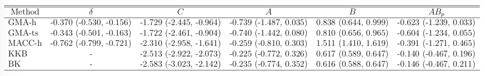

Granger Mediation Analysis for Multiple Time Series
Xi (Rossi) LUO
Department of Biostatistics
Center for Statistical Sciences
Computation in Brain and Mind
Brown Institute for Brain Science
Brown Data Science Initiative
ABCD Research Group

July 4, 2018
Funding: NIH R01EB022911, P20GM103645, P01AA019072, P30AI042853; NSF/DMS (BD2K) 1557467
Slides viewable on web:
bit.ly /icsa18
fMRI Experiments


- Task fMRI: performs tasks under brain scanning
-
Randomized stop/go task:- press button if "go";
- withhold pressing if "stop"
- Not resting-state: "do nothing" during scanning

fMRI data: blood-oxygen-level dependent (BOLD) signals from each
Multilevel fMRI Studies
Sub 1, Sess 1

Time 1
2
…
~200
⋮
Sub i, Sess j
…
⋮
Sub ~100, Sess ~4
…
e.g. $1000 \times 4 \times 300 \times 10^6 \approx 1 $ trillion data points
Raw Data: Motor Region


$Z_t$: Stimulus onsets convoluted with Canonical HRF
$M_t$, $R_t$: fMRI time series from two brain regions
Review: Granger Causality/VAR
- Given two (or more) time series $x_t$ and $y_t$ $$\begin{align*} x_t &= \sum_{j=1}^p \psi_{1j} x_{t-j} + \sum_{j=1}^p \phi_{1j} y_{t-j} + \epsilon_{1t} \\ y_t &= \sum_{j=1}^p \psi_{2j} y_{t-j} + \sum_{j=1}^p \phi_{2j} x_{t-j} + \epsilon_{2t} \end{align*}$$
- Also called vector autoregressive models
- $y$ Granger causes $x$ if $\phi_{1j} \ne 0$ Granger, 69
- Models
pair-wise connections notpathways
Granger Causality/VAR
- Granger Causality (VAR) popular for fMRI
- About
8000 google scholar results on "granger causality neuroimaging"
- About
- Models multiple
stationary time series - AR($p$) (small $p$) fits fMRI well Lingdquist, 08
Not fornon-stationary /task fMRICannot model stimulus effects
Conceptual Model with Stimulus

Goal: quantify effects stimuli → preSMA → PMC regions Duann, Ide, Luo, Li (2009). J of Neurosci
Model: Mediation Analysis and SEM
 $$\begin{align*}M &= Z a + \overbrace{U + \epsilon_1}^{E_1}\\ R &= Z c + M b + \underbrace{U g + \epsilon_2}_{E_2}, \quad \epsilon_1 \bot \epsilon_2\end{align*}$$
$$\begin{align*}M &= Z a + \overbrace{U + \epsilon_1}^{E_1}\\ R &= Z c + M b + \underbrace{U g + \epsilon_2}_{E_2}, \quad \epsilon_1 \bot \epsilon_2\end{align*}$$
-
Indirect effect: $a \times b$; Direct effect: $c$ - Correlated errors: $\delta = \cor(E_1, E_2) \ne 0$ if $U\ne 0$
Mediation Analysis in fMRI
- Mediation analysis (usually assuming $U=0$)Baron&anp;Kenny, 86; Sobel, 82; Holland 88; Preacher&Hayes 08; Imai et al, 10; VanderWeele, 15;...
- Parametric Wager et al, 09 and functional Lindquist, 12 mediation, under (approx.) independent errors
- Stimulus $\rightarrow$ brain $\rightarrow$
user reported ratings , one brain mediator - Assuming $U=0$ between ratings and brain
- Stimulus $\rightarrow$ brain $\rightarrow$
- Multiple mediator and multiple pathways
- Dimension reduction by arXiv1511.09354Chen, Crainiceanu, Ogburn, Caffo, Wager, Lindquist, 15
- Pathway Lasso penalization Zhao, Luo, 16
- This talk: integrating Granger causality and mediation analysis
Model & Method
Our Mediation Model
$$\begin{align*}M_{t} = Z_{t} a + E_{1t},\quad R_t = Z_t c + M_t b + E_{2t}\end{align*}$$Temporal VAR errors $$\begin{align*} E_{1t}&=& \sum_{j=1}^{p}\left(\omega_{11_{j}}E_{1,t-j}+\omega_{21_{j}}E_{2,t-j}\right)+\epsilon_{1t} \\ E_{2t}&=&\sum_{j=1}^{p}\left(\omega_{12_{j}}E_{1,t-j}+\omega_{22_{j}}E_{2,t-j}\right)+\epsilon_{2t} \end{align*}$$Spatial errors: $\epsilon_{1t}, \epsilon_{2t}$ $$ \begin{pmatrix} \epsilon_{1t} \\ \epsilon_{2t} \end{pmatrix}\sim\mathcal{N}\left(\boldsymbol{\mathrm{0}},\boldsymbol{\Sigma}\right), \quad \boldsymbol{\Sigma}=\begin{pmatrix} \sigma_{1}^{2} & \delta\sigma_{1}\sigma_{2} \\ \delta\sigma_{1}\sigma_{2} & \sigma_{2}^{2} \end{pmatrix} $$
Equivalent Form
$$\begin{align*} \scriptsize M_{t}& \scriptsize =Z_{t}A+\sum_{j=1}^{p}\left(\phi_{1j}Z_{t-j}+\psi_{11_{j}}M_{t-j}+\psi_{21_{j}}R_{t-j}\right)+\epsilon_{1t} \\ \scriptsize R_{t}& \scriptsize =Z_{t}C+M_{t}B+\sum_{j=1}^{p}\left(\phi_{2j}Z_{t-j}+\psi_{12_{j}}M_{t-j}+\psi_{22_{j}}R_{t-j}\right)+\epsilon_{2t} \end{align*} $$- Nonzero $\phi$'s and $\psi$'s denote the temporal influence from stimulus to mediator/outcome and etc
- $A$, $B$, $C$ are causal following a similar proof in Sobel, Lindquist, 04
Estimation: Conditional Likelihood
- The full likelihood for our model is too complex
- Given the initial $p$ time points, the conditional likelihood is $$ \begin{align*} & \tiny \ell\left(\boldsymbol{\Theta},\delta~|~\mathbf{Z},\mathcal{I}_{p}\right) = \sum_{t=p+1}^{T}\log f\left((M_{t},R_{t})~|~\mathbf{X}_{t}\right) \\ & \tiny = -\frac{T-p}{2}\log\sigma_{1}^{2}\sigma_{2}^{2}(1-\delta^{2})-\frac{1}{2\sigma_{1}^{2}}\|\mathbf{M}-\mathbf{X}\boldsymbol{\theta}_{1}\|_{2}^{2} \\ & \tiny -\frac{1}{2\sigma_{2}^{2}(1-\delta^{2})}\|(\mathbf{R}-\mathbf{M}B-\mathbf{X}\boldsymbol{\theta}_{2})-\kappa(\mathbf{M}-\mathbf{X}\boldsymbol{\theta}_{1})\|_{2}^{2} \end{align*} $$
Multilevel Data: Two-level Likelihood
- Second level model, for each subject $i$ $$(A_i,B_i,C_i) = (A,B,C) + (\eta^A_i, \eta^B_i, \eta^C_i)$$ where errors $\eta$ are normally distributed
- The two level likelihood is conditional convex
- Two-stage fitting: plug-in estimates from the first level
- Block coordinate fitting: jointly optimize first level likelihood + second level likelihood
1. If $\boldsymbol{\Lambda}$ is known, then the two-stage estimator $\hat{\delta}$ maximizes the profile likelihood of model asymptotically, and $\hat{\delta}$ is $\sqrt{NT}$-consistent.
2. If $\boldsymbol{\Lambda}$ is unknown, then the profile likelihood of model has a unique maximizer $\hat{\delta}$ asymptotically, and $\hat{\delta}$ is $\sqrt{NT}$-consistent, provided that $1/\varpi=\bar{\kappa}^{2}/\varrho^{2}=\mathcal{O}_{p}(1/\sqrt{NT})$, $\kappa_{i}=\sigma_{i_{2}}/\sigma_{i_{1}}$, $\bar{\kappa}=(1/N)\sum\kappa_{i}$, and $\varrho^{2}=(1/N)\sum(\kappa_{i}-\bar{\kappa})^{2}$.
Using the two-stage estimator $\hat{\delta}$, the CMLE of our model is consistent, as well as the estimator for $\mathbf{b}=(A,B,C)$.
Theory: Summary
- Under regularity conditions, $N$ subs, $T$ time points
- Our $\hat \delta$ is $\sqrt{NT}$-consistent
- This relaxes the unmeasured confounding assumption in mediation analysis
- Our $(\hat{A},\hat{B}, \hat{C})$ is also consistent
Simulations & Real Data
Comparison
- Our methods:
GMA-h andGMA-ts - Previous methods: BK Baron & Kenny, MACC Zhao and Luo, KKB Kenny et al
- Other methods do not model the temporal correlations or time series like ours
Simulations
Low bias for $AB$
Low bias for temporal cor
Gray dash lines are the truth
Real Data Experiment
- Public data: OpenFMRI ds30
- Stop-go experiment: withhold (STOP) from pressing buttons
- Expect "STOP" stimuli to deactivate brain region M1
- Goal: quantify the role of region preSMA
Result
Result
- STOP deactivates M1 directly ($C$) and indirectly ($AB$)
- preSMA mediates a good portion of the total effect
- Help resolve the debates among neuroscientists
- Other methods under-estiamte the effects
- Novel feedback findings: M1 → preSMA after lag 1 and 2 (not shown)
Discussion
- Mediation analysis for multiple time series
- Method: Granger causality + mediation
- Optimizing complex likelihood
- Theory: identifiability, consistency
- Result: low bias and improved accuracy
- Extension: functional mediation (Zhao, Function 37)
- CRAN pkg:
gma and references within
Thank you!
Comments? Questions?
BigComplexData.com
or BrainDataScience.com